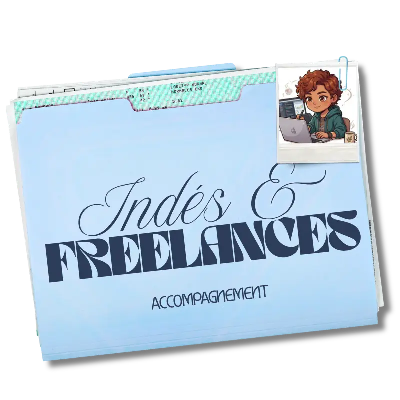
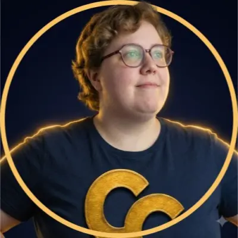
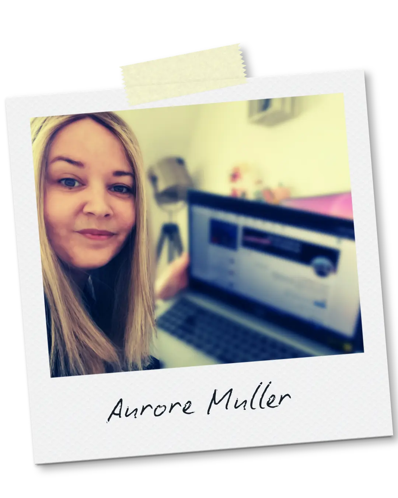

Attirer & convaincre tes prospects
Je t’aide à clarifier ton message, structurer ton parcours client et mieux préparer tes rendez-vous commerciaux pour avancer jusqu’à la signature.

Où ça bloque aujourd’hui ?
Des situations concrètes qu'on peut débloquer ensemble.
Tu as du mal à présenter et vendre ton activité
Tu as du mal à l'expliquer simplement ce que tu fais et à montrer clairement la valeur de ce que tu proposes. Ton offre manque peut-être encore de clarté, ou tu ne sais pas toujours comment en parler face à un prospect.
On peut travailler sur :
- Ton message et ton positionnement
- La clarté de ton offre
- La façon de présenter ton activité
- Ton discours commercial
Tu as des contacts, mais peu de signatures
Tu as des demandes, des recommandations ou des rendez-vous, mais les échanges n’aboutissent pas toujours. Tu as peut-être du mal à poser les bonnes questions, à faire émerger le besoin ou à amener naturellement la discussion jusqu’à ton offre.
On peut travailler sur :
- La préparation de tes rendez-vous
- La découverte du besoin
- La présentation de ton offre
- Les objections et la suite à donner
Tu n'as pas assez de demandes régulières
Ton activité est lancée, mais les demandes arrivent par périodes. Tu comptes sur le bouche-à-oreille et quelques actions ponctuelles, mais tu n'as pas de parcours clair pour présenter ton activité et donner envie de te contacter.
On peut travailler sur :
- Ton parcours client
- Les points de contact avec tes prospects
- La façon dont tu presents ton activité
- Ton profil LinkedIn ou ton site vitrine
Leur retour après l'accompagnement
Découvre les retours d'expérience des indépendants accompagnés.
Marianne C.
Avis Google« Aurore a su de suite cibler ce qui me manquait dans le développement de mon entreprise. Son accompagnement sur mesure, ses conseils pertinents et son support de travail m’ont permis d’y voir plus clair et de passer rapidement à l’action quant au développement de mon activité ! Je te remercie également pour ta gentillesse, disponibilité, simplicité et écoute ! Je recommande vivement. »

Laëtitia C.
LinkedInIl y a quelques mois encore, mon projet d’entreprise occupait énormément de place dans ma tête. Les idées étaient là. L’envie aussi. Mais entre réfléchir à son entreprise et réellement la construire, il y a parfois un sacré fossé. C’est exactement ce que l’accompagnement Maître Zen d’Aurore Muller m’a permis de franchir.
Dès notre première séance, j’ai eu le sentiment d’avoir davantage avancé qu’en plusieurs mois de réflexion seule. Pourquoi ? Parce qu’avec Aurore, on ne reste pas dans la théorie. On clarifie. On structure. On construit. Et surtout, on passe à l’action.
Le résultat le plus parlant pour moi ? Avant même la fin de l’accompagnement, j’avais réalisé mon premier vrai entretien découverte avec un prospect et envoyé mon premier devis. ✨

Annick M.
LinkedIn« Merci Aurore pour cet accompagnement Maître Zen qui porte hyper bien son nom ! En effet, jusqu'ici ma bête noire c'était la prospection et le rdv de closing. Avec ton accompagnement j'ai gagné en sérénité, j'ai moins peur de prospecter, j'ai un scénario facile à réaliser et moins de blocage pendant le setting. Hâte de tester le rdv de closing ! »

Anne-Gaëlle B.
Avis Google« Je suis ravie du travail réalisé par Aurore. Elle a complètement repensé mon profil LinkedIn pour qu'il reflète vraiment qui je suis et ce que je propose. Au-delà du visuel, elle a mis en place une vraie stratégie de contenu qui m'aide à être plus visible et plus crédible. Depuis j'ai beaucoup plus de retours positifs lorsque je prends contact avec de nouveaux prospects. Une collaboration que je recommande sans hésiter. »
Jacques M.
Avis Google« Professionnalisme et efficacité ! Et surtout Aurore comprend très vite ce dont on a besoin, je recommande vivement. »

Jean-Yves C.
LinkedIn« Merci à Aurore pour son regard neuf et extérieur qui m'a permis d'avancer et d'y voir plus clair aussi sur mon profil. »
Comment je peux t'aider à avancer
Trois façons de travailler ensemble selon tes besoins.
Maître Zen
Accompagnement individuel
Un accompagnement individuel à la carte pour travailler précisément les sujets qui bloquent aujourd'hui.
- ✓ Message : Clarifier ce que tu proposes, pour qui et comment en parler.
- ✓ Parcours client : Comprendre ce que vit ton prospect du premier contact jusqu’à la décision.
- ✓ Rendez-vous commerciaux : Préparer et mener tes échanges pour mieux comprendre le besoin, présenter ton offre et avancer vers la signature.
Profil LinkedIn
Optimisation & Visibilité
Pour présenter clairement ton activité et donner à tes prospects les bonnes raisons d'aller plus loin.
- ✓ Profil : Réécriture des différentes sections pour expliquer rapidement ce que tu fais et pour qui.
- ✓ Visuels : Bannière et vignettes de sélection pour donner une image professionnelle et faciliter la compréhension de ton activité.
- ✓ Parcours : Organisation du profil pour guider naturellement ton visiteur vers la prise de contact.
Site Web Vitrine
Présenter ton activité
Pour avoir un point de contact clair où tes prospects peuvent comprendre ton activité, découvrir tes offres et te contacter.
- ✓ Structure sur-mesure : Un site léger, clair et adapté à ton activité.
- ✓ Parcours client fluide : Une navigation pensée pour amener naturellement vers la prise de contact.
- ✓ Optimisation SEO & Éco-conception : Un site optimisé pour être visible et rester léger.
Concrètement ça donne quoi ?
Ils ont débloqué ce qui freinait leur activité.
Laëtitia C.
Designer en communication
Avant l'accompagnement
« Les idées étaient là. L’envie aussi. Mais entre réfléchir à son entreprise et réellement la construire, il y a parfois un sacré fossé. »
Ce qu'on a travaillé
- ✓ Positionnement et message
- ✓ Parcours client
- ✓ Discours commercial
Résultat obtenu
« Avant même la fin de l’accompagnement, j’avais réalisé mon premier vrai entretien découverte avec un prospect et envoyé mon premier devis. »
Annick M.
Consultante relation client
Avant l'accompagnement
« J'avais du mal à organiser et mener à bien mes entretiens de vente, ça partait dans tous les sens et j'avais du mal à closer.»
Ce qu'on a travaillé
- ✓ Parcours client
- ✓ Point de contact
- ✓ Discours commercial
Résultat obtenu
« J'ai gagné en sérénité, j'ai moins peur de prospecter, j'ai un scénario facile à réaliser et moins de blocages. »
Marianne C.
Communicatrice animalière
Avant l'accompagnement
« Je n'étais pas à l'aise et je manquais de confiance pour présenter mes services, notamment pour trouver de nouveaux partenariats. »
Ce qu'on a travaillé
- ✓ Discours commercial
- ✓ Stratégie d'acquisition
- ✓ Traitement des objections
Résultat obtenu
« J'ai gagné en confiance pour présenter mes services et j'ai pu passer rapidement à l'action pour développer mon activité. »
J'ai donné forme à un parcours qui donne envie de travailler avec eux.
Qui se cache
derrière AM 2.0 ?

Qui se cache derrière AM 2.0 ?
Pourquoi un client hésite? Qu'est-ce qui le motive à aller plus loin?
Plus de 10 ans dans le commerce m’ont appris à observer ce qui se passe avant une décision. Sur le terrain, j’ai accompagné des clients dans leurs projets, leurs hésitations et leurs décisions d’achat. J’ai formé les équipes commerciales pour les aider à mieux comprendre leurs clients, structurer leurs échanges et avancer vers la vente.
Ces dernières années, j’ai travaillé sur des parcours clients digitaux, de la première recherche jusqu’à la prise de contact et au suivi. J’y ai retrouvé la même logique : ce qu’un prospect voit, ce qu’il comprend, ce qui le rassure, ce qui le fait hésiter… et ce qui peut lui donner envie d’aller plus loin.
C’est cette double expérience que je mets aujourd’hui au service de ton activité.
Une dernière question ?
Les réponses aux questions que tu peux te poser avant de te lancer.
À toi si tu es indépendant ou freelance et que tu te reconnais dans l’une de ces situations :
- Tu as du mal à expliquer clairement ce que tu fais et à présenter ton offre.
- Tu as des contacts ou des rendez-vous, mais peu de signatures.
- Ton activité est lancée, mais les demandes restent irrégulières.
- Tu comptes beaucoup sur le bouche-à-oreille ou des actions ponctuelles pour trouver des prospects.
- Tu ne sais pas toujours comment présenter ton activité ou quoi montrer à tes prospects pour leur donner envie d’aller plus loin.
L’objectif est d’identifier ce qui bloque aujourd’hui et de travailler précisément dessus, que ce soit ton message, ton parcours client ou tes rendez-vous commerciaux.
Non. Les trois modules sont indépendants.
Tu peux travailler uniquement le sujet dont tu as besoin : Message, Parcours client ou Rendez-vous commerciaux.
Chaque module dure 2h et coûte 350 €.
Si tu veux travailler les trois sujets, le parcours complet est proposé à 900 € au lieu de 1 050 €, avec un paiement en 3 fois possible.
Tu as deux possibilités :
1. Tu veux simplement identifier tes priorités ?
Fais l’auto-diagnostic offert. Il te permettra de voir si tu dois plutôt travailler ton message, ton parcours client ou tes rendez-vous commerciaux.
2. Tu préfères en discuter avec quelqu’un ?
On peut faire le point ensemble pendant le RDV 1er Clic de 30 min offert. Je pourrai te donner mon regard sur ta situation et voir avec toi ce qui serait le plus pertinent.
Chaque module comprend 2h d’accompagnement en visio, réparties en 2 sessions d’1h.
Entre les deux séances, tu avances de ton côté grâce à un workbook comprenant des exercices et des ressources pour approfondir ta réflexion et préparer la suite.
L’objectif : ne pas passer 2h à simplement discuter, mais réfléchir, travailler et avancer concrètement entre les séances.
Pas simplement à avoir un profil plus joli.
Un profil bien rédigé permet à ton prospect de comprendre rapidement ce que tu fais, pour qui et ce que tu peux lui apporter. Un parcours clair l’aide ensuite à trouver les bonnes informations et à savoir où aller pour prendre contact.
Et les visuels ont aussi leur rôle : ils attirent le regard, donnent envie de s’arrêter sur ton profil et facilitent la découverte de ton activité.
L’objectif est d’avoir un profil qui ne se contente pas de présenter ton parcours, mais qui guide ton prospect jusqu’à la prise de contact.
Un site n’est pas forcément nécessaire pour tout le monde.
Mais si tes prospects te cherchent sur Google ou veulent en savoir plus après t’avoir découvert ailleurs, ils vont souvent chercher un endroit où approfondir leur découverte.
Ton site leur permet de comprendre rapidement :
- Ce que tu fais
- Pour qui tu le fais
- Ce que tu proposes
- Pourquoi travailler avec toi
- Et comment te contacter
Il devient ainsi un point de contact qui prolonge ton parcours client, plutôt qu'une simple vitrine en ligne.